Greece and Rome — key ideas, the Olympians, their roles and iconography, the Homeric Hymn to Demeter, and how Rome inherited the gods
Greece
Greek religion — key ideas
Hiera, polytheism, anthropomorphism, epithets
the Greeks had no word for "religion" — they used hiera, meaning "holy affairs"
religion was about action — you had to physically worship the gods through sacrifice and offering; belief alone was not enough
Greek religion was polytheistic — hundreds of gods, each with their own domain and skills
the gods were anthropomorphic — they looked and acted like humans: capable of jealousy, love, anger, and grief
gods were addressed with epithets — descriptive titles highlighting a quality relevant to the worshipper's need, e.g. Zeus Horkios ("keeper of oaths"), Poseidon Enosichthon ("earth-shaker")
the chief gods were the twelve Olympians, believed to live on Mount Olympus — with one exception: Hades, who ruled the Underworld
Greek religion was built on a transaction: perform the correct ritual, and hope for the gods' favour in return. The word hiera captures this — it is about doing the holy things correctly, not about personal faith. Anthropomorphic gods made this relationship workable. If the gods could feel jealousy, grief, and pleasure just as humans did, then humans could negotiate with them, appease them, and win them over. That is why the myths matter — they are not decoration, they show how gods behave and what they respond to.
Exam focus
What is meant by the term anthropomorphism? Give an example from Greek myth.
What were epithets, and why were they useful?
What does the word hiera tell us about how the Greeks understood religion?
Greece
The gods — roles and iconography
How to identify a god
for the exam you need to be able to identify a god from a visual source, name their domain, and explain why the Greeks worshipped them
identification comes from iconography — the symbols, objects, and attributes consistently shown with each god
the iconography is logical: Poseidon rules the sea, so he carries a trident; Hermes travels between worlds, so he has winged sandals
you may be shown any image of a god on the specification — on an amphora, in relief sculpture, or as a statue; the medium will be named if it is a non-prescribed source
Zeusking of the godsview image
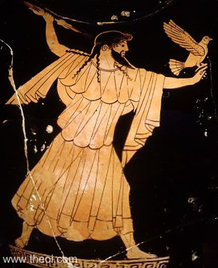
Zeus · king of the gods
Domain: king of the gods; god of the sky, justice, and fate
Iconography: thunderbolt; eagle; sceptre; bearded man on a throne
Significance: ruler of gods and men; keeper of justice; his sons include Heracles and Apollo; central to Homer's Iliad and Odyssey
Heraqueen of the godsview image
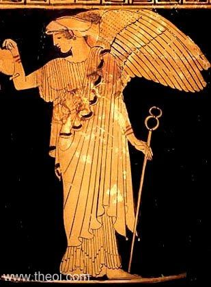
Hera · queen of the gods
Domain: queen of the gods; goddess of marriage, women, and childbirth
Iconography: diadem (crown); sceptre; peacock; depicted as a regal, powerful woman
Significance: wife of Zeus; protector of marriage; her jealousy of Zeus's affairs drives many myths — her persecution of Heracles and her hatred of the Trojans are both rooted in this
Poseidongod of the seaview image
Poseidon · god of the sea
Domain: god of the sea, earthquakes, and horses
Iconography: trident; bearded man; associated with horses
Significance: vital to sailors and anyone making a sea journey; sided with the Greeks in the Iliad because the Trojans had never paid him for helping build their city; pursued Odysseus throughout the Odyssey after Odysseus blinded his son Polyphemus
Demetergoddess of the harvestview image
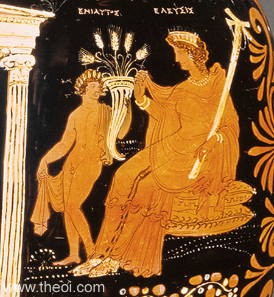
Demeter · goddess of the harvest
Domain: goddess of agriculture and the harvest
Iconography: diadem; sheaf of wheat, grain, or flowers
Significance: Greek society depended on the harvest — Demeter was essential to survival; her grief for Persephone explains the seasons; she is the central figure in the Homeric Hymn to Demeter (prescribed source); she had a Mystery Cult at Eleusis dedicated to her
Athenagoddess of wisdom & tactical warview image
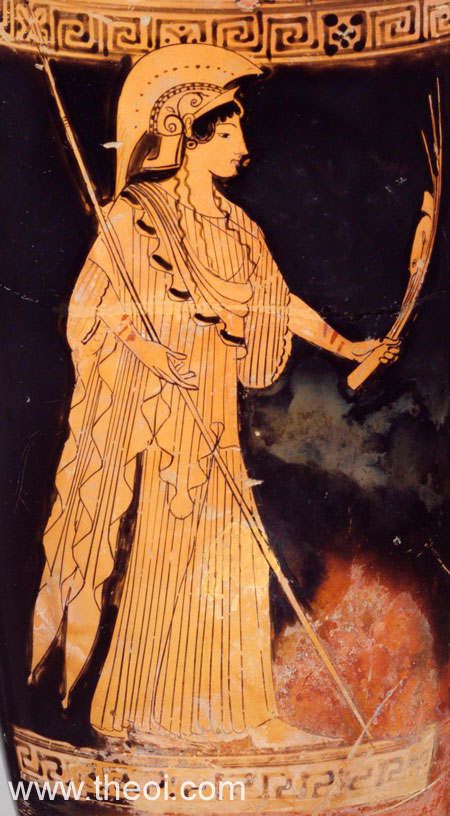
Athena · goddess of wisdom & war
Domain: goddess of war (tactics and strategy) and wisdom
Iconography: helmet; spear; aegis (breastplate engraved with a gorgon's head); owl; often shown with Nike (winged victory)
Significance: patron goddess of Athens; born fully armed from Zeus's head after he swallowed her mother Metis; the Parthenon on the Athenian Acropolis was her temple; her epithet Parthenos means "the virgin"
Apollogod of music, prophecy & archeryview image
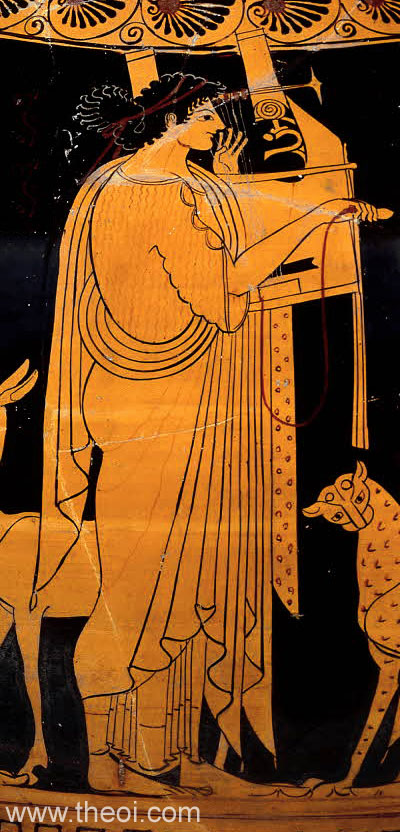
Apollo · god of music & prophecy
Domain: god of music, the arts, education, archery, and prophecy
Iconography: bow and arrow; lyre; depicted in eternal youth, sometimes almost childlike
Significance: one of the most widely worshipped gods across the Greek world; his oracle at Delphi was the most important in Greece; associated with the sun; his twin sister is Artemis; his epithet Phoebus means "shining"
Artemisgoddess of the huntview image
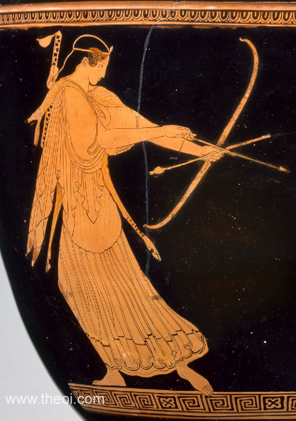
Artemis · goddess of the hunt
Domain: goddess of hunting, wildlife, and childbirth; twin sister of Apollo
Iconography: bow and arrow; associated with the moon
Significance: sacred animals were under her protection — the Golden Hind was sacred to her; twin of Apollo, she was associated with the moon as he with the sun; her epithet Phoebe mirrors his Phoebus
Aphroditegoddess of love & beautyview image
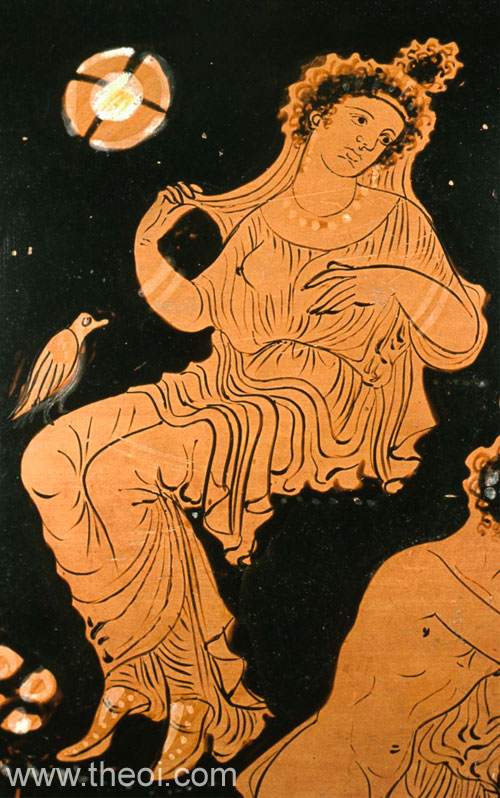
Aphrodite · goddess of love & beauty
Domain: goddess of love and beauty
Iconography: often depicted naked or rising from a sea shell; accompanied by Eros
Significance: her influence was irresistible — only Athena, Hestia, and Artemis could resist her; her gift of Helen to Paris caused the Trojan War; she was born from the sea, unlike most other Olympians who were children of Zeus or Hera
Aresgod of violent warview image
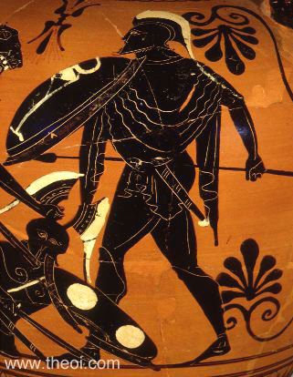
Ares · god of war
Domain: god of war — specifically its violence and aggression
Iconography: armour; depicted in battle
Significance: represents raw, brutal violence in battle — the direct contrast to Athena's tactical intelligence; feared rather than widely loved; father of Eros by Aphrodite; in the Homeric Hymns he is associated with courage, but in the Iliad he is a merciless killer
Hephaistosgod of metalworkingview image
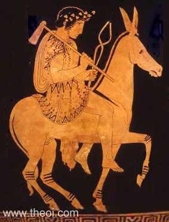
Hephaistos · god of metalworking
Domain: god of metalworking, fire, and craftsmen
Iconography: hammer; walks with a limp
Significance: his limp is explained two ways — born lame, or thrown from Olympus by Zeus; made the armour of Achilles; famously trapped Ares and Aphrodite in an unbreakable net after discovering their affair; depicted in art with his hammer
Hermesmessenger of the godsview image
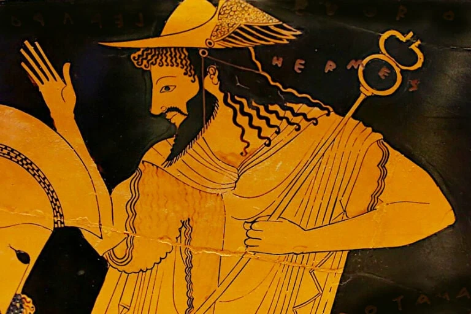
Hermes · messenger of the gods
Domain: god of travel and trade; messenger of the gods; psychopomp — guide of souls to the Underworld
Significance: one of only two Olympians (with Dionysus) who could travel to the Underworld; key figure in the Homeric Hymn to Demeter — Zeus sends him to retrieve Persephone; appears throughout Greek myth as Zeus's messenger
Hestiagoddess of the hearthview image
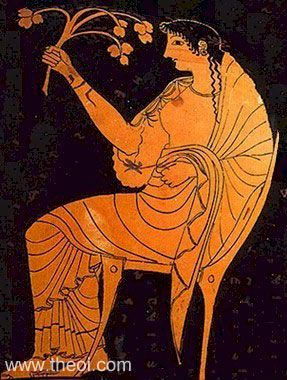
Hestia · goddess of the hearth
Domain: goddess of the home and hearth
Iconography: veiled head; rarely depicted in art
Significance: the hearth fire was central to both home and city; every sacrifice began with an offering to Hestia; cities maintained a public hearth fire as a symbol of the city's security and power
Dionysusgod of wine & theatreview image
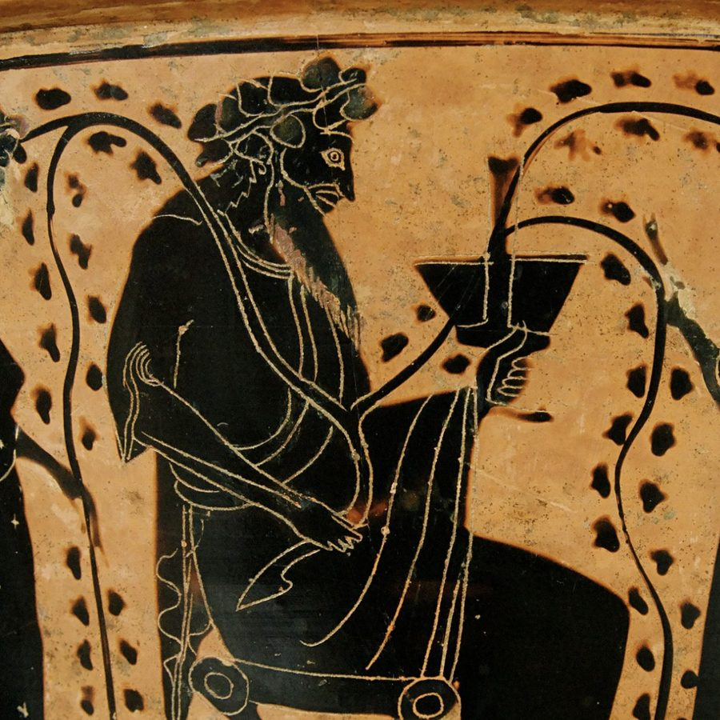
Dionysus · god of wine & theatre
Domain: god of wine and theatre
Iconography: thyrsus (pine-cone-tipped staff); vines; animal skin; maenads (female followers) and satyrs (half-man, half-goat) as companions
Significance: son of Zeus and the mortal Theban woman Semele — this made him an outsider among the Olympians; one of only two Olympians who could enter the Underworld; had his own festival in Athens, the Dionysia; linked to the Anthesteria festival
Hadesgod of the Underworldview image
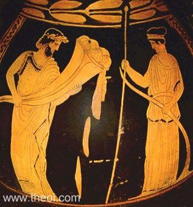
Hades · god of the Underworld
Domain: god of the Underworld; chthonic deity (connected to the earth and underworld)
Iconography: cornucopia (horn of plenty — showing his link to his wife Persephone and mother-in-law Demeter); often depicted with Persephone
Significance: ruler of the dead; unlike the other Olympians he lived in the Underworld, not on Olympus; not widely worshipped but essential to Greek beliefs about death; his abduction of Persephone is the subject of the Homeric Hymn to Demeter
The iconography is a visual language. A Greek worshipper looking at a vase or a relief needed to identify the god instantly — the symbols make that possible. The epithets work the same way but in words: they tell you which aspect of the god is relevant right now. Invoking Zeus as "keeper of oaths" is a different act from invoking him as "father of gods and men", even though it is the same god. Both symbols and epithets are tools for managing the relationship between humans and the divine.
Exam focus
Who is the god shown in this source, and how do you know?
Why would the Greeks have worshipped this god?
Give one example of an epithet and explain what it tells us about Greek religion.
What does anthropomorphism mean, and why was it useful to the Greeks?
What is the difference between Ares and Athena as gods of war?
Greece
The Homeric Hymn to Demeter — prescribed source
Source facts
Author: attributed to Homer
Date: uncertain; probably 7th–6th century BC (debated)
Genre: poetry
Protagonists: Demeter, Persephone, Hades
Prescribed lines: 1–104, 301–474
Significance: shows what the Greeks believed the relationship between gods and humans was like; explains the cycle of the seasons; describes the founding of the Eleusinian Mysteries
The storylines 1–104
Hades abducts Persephone, daughter of Demeter, dragging her to the Underworld while she picks flowers
Demeter searches the earth for nine days in grief, refusing to eat or wash
she disguises herself as an old woman and arrives at Eleusis, where she is taken in by the family of King Keleos
she reveals herself as a goddess and demands a temple and altar be built for her at Eleusis
in her grief she withdraws from the other gods and causes famine — the earth stops producing crops; the human race faces destruction
Zeus is forced to intervene — if humans die, the gods will receive no more sacrifices or honours
The storylines 301–474
Zeus sends Hermes to the Underworld to retrieve Persephone
before leaving, Hades secretly gives Persephone a pomegranate seed to eat — anyone who has eaten in the Underworld must return to it
the result: Persephone spends one third of the year below with Hades, and two thirds above with the gods
Demeter explains the consequence: when Persephone is in the Underworld, the earth is barren; when she returns, it blooms — this is the mythological explanation for the seasons
Demeter establishes the Eleusinian Mysteries at Eleusis — secret initiation rites that promised initiates a blessed afterlife; what happened in them was kept strictly secret
What the hymn tells us about the gods
Anthropomorphism: Demeter's grief is total and human — she stops eating, stops washing, neglects her divine duties; the gods feel as humans do
The gods depend on humans: Zeus intervenes not out of sympathy for Demeter but because if humans starve, the gods receive no sacrifices — the relationship is mutual
Myth explains the natural world: the seasons have a divine cause rooted in personal loss and family separation
The gods are not always in control: Hades acts independently; Zeus must negotiate; even divine power has limits
Proper worship is rewarded: Demeter establishes the Mysteries as a gift to those who housed and honoured her at Eleusis
The Hymn is one of our best sources for what Greeks believed about the gods. It shows a divine world that is recognisably human in its emotions — grief, anger, longing — but operating on a scale that affects the whole of nature. Demeter's withdrawal is not a tantrum; it is a reminder that the gods and humans need each other. The Mysteries she founds are the direct result of this episode, which shows how myth and ritual were connected: the story gives the ritual its meaning, and the ritual re-enacts the story.
Exam focus
Describe what happens in the Homeric Hymn to Demeter.
What does the Hymn tell us about the relationship between gods and humans?
How does the Hymn show the gods to be anthropomorphic?
Why did Zeus intervene to help Demeter?
What were the Eleusinian Mysteries, and how were they connected to this myth?
Rome
How Rome inherited the gods
Rome and the Greeks
before Rome was founded, Italy was inhabited by many tribes — the most influential near Rome were the Etruscans, who had been exposed to Greek culture and religion
Rome was also in contact with the Greeks directly — Greek settlers had inhabited southern Italy and Sicily (known as Magna Graecia, "Great Greece") from the ninth century BC
by the time Magna Graecia came fully under Roman control around 270 BC, Greek religion and mythology were already shaping Roman religious ideas
Rome borrowed and adapted Greek religious ideas rather than replacing them — most Roman gods were identified with Greek equivalents and given Roman names
one exception: Apollo had no Etruscan equivalent and was taken straight from the Greek pantheon — his name is identical in both cultures
How Roman gods differed
Roman gods were more closely tied to the state and military — Mars was far more important to Rome than Ares was to Greece
Venus gained a significance beyond Aphrodite's because she was the divine ancestor of Aeneas, the founder of the Roman race, and by extension of Augustus himself
Juno's hostility to Aeneas in Virgil's Aeneid mirrors Hera's hatred of the Trojans — the Roman adaptation keeps the same divine personality but gives it Roman context
Roman religion used the word religio — "the correct worship of the state gods" — emphasising duty to the state as well as to the divine
Rome did not simply copy Greece. It absorbed Greek religious ideas and reshaped them to fit Roman values — civic duty, military strength, the importance of the state. A god like Mars, associated with agriculture as well as war in early Roman history, grew into a figure of central importance as Rome became an expansionist military power. The gods Rome emphasised most were the ones most useful to Rome.
Exam focus
How did Rome come to adopt the Greek gods?
What is the difference between hiera and religio?
Why was Apollo unusual among the Roman gods?
Rome
The gods — Roman names and key differences
The Roman pantheon
most Roman gods correspond directly to a Greek equivalent — same domain, similar iconography, different name
each entry below gives the Roman god, the Greek equivalent, the domain, the iconography, and any significant difference
JupiterGreek: Zeus
Domain: king of the gods; sky, justice, fate
Iconography: thunderbolt; eagle; sceptre; bearded man on a throne — identical to Zeus
Difference: Jupiter's main temple was the Temple of Jupiter Optimus Maximus ("Jupiter the Best and Greatest") on the Capitoline Hill — the political and ceremonial heart of Rome; the senate met there to discuss war
JunoGreek: Hera
Domain: queen of the gods; marriage, women, childbirth
Iconography: diadem; sceptre; peacock — identical to Hera
Difference: in Virgil's Aeneid Juno relentlessly persecutes the Trojan hero Aeneas, destroying his ships and killing his men — the same jealous, wrathful character as Hera but placed in a Roman narrative context
NeptuneGreek: Poseidon
Domain: god of the sea, earthquakes, and storms
Iconography: trident; bearded man — identical to Poseidon
Difference: as Rome expanded across the Mediterranean, Neptune became increasingly important to Roman sailors, traders, and military commanders
PlutoGreek: Hades
Domain: god of the Underworld
Iconography: rarely depicted; when shown, often with Proserpina (Persephone)
Difference: the myth of Pluto's abduction of Proserpina (Persephone) was a popular decoration on Roman sarcophagi — the myth of return from the Underworld offered comfort about death and the afterlife
CeresGreek: Demeter
Domain: goddess of the harvest and grain
Iconography: diadem; sheaf of wheat, grain, or flowers — identical to Demeter
Difference: Ceres was especially important to the Roman plebs (common people) who depended on grain for survival; she had a temple on the Aventine Hill and her own annual festival, the Cerealia (12–19 April)
VestaGreek: Hestia
Domain: goddess of the hearth and fire
Iconography: veiled head — identical to Hestia; rarely depicted
Difference: Vesta was far more important to Rome than Hestia was to Greece; she had her own priesthood (the Vestal Virgins) and a temple complex in the Forum; her flame was believed to have been brought to Italy by Aeneas and symbolised the security of the Roman state — if it went out, Rome would fall
VulcanGreek: Hephaistos
Domain: god of metalworking, fire, and craftsmen
Iconography: hammer — identical to Hephaistos
Difference: industry and warfare were central to Roman life; Vulcan had his own annual festival, the Vulcanalia (23 August); he also appeared in Virgil's Aeneid, crafting the shield of Aeneas
VenusGreek: Aphrodite
Domain: goddess of love and beauty
Iconography: depicted naked or accompanied by her son Cupid — similar to Aphrodite
Difference: Venus was far more significant to Rome than Aphrodite was to Greece — she was the divine mother of Aeneas, founder of the Roman race; the emperor Augustus linked his own family to Venus and used her symbols throughout his art and propaganda; her temple, the Temple of Venus Genetrix ("Venus the Mother"), stood in the Forum of Caesar
MinervaGreek: Athena
Domain: goddess of war and wisdom
Iconography: helmet; spear; aegis; owl — identical to Athena
Difference: the Romans more closely associated war with Mars than with Minerva; Minerva was more prominent as goddess of wisdom, crafts, and trade
DianaGreek: Artemis
Domain: goddess of hunting, childbirth, and the moon
Iconography: bow and arrow — identical to Artemis; also called Phoebe
Difference: Diana had a temple on the Aventine Hill dedicated by the sixth king of Rome, Servius Tullius — according to tradition, born a slave; her cult attracted a large following from the urban poor and slaves
ApolloGreek: Apollo
Domain: god of music, arts, education, archery, and prophecy — identical to the Greek Apollo
Iconography: bow and arrow; lyre; eternal youth — identical
Difference: Apollo had no Etruscan equivalent — he was taken directly from the Greek pantheon; he became a favourite of the emperor Augustus after the Battle of Actium (31 BC), who built him a temple on the Palatine Hill and honoured him with festivals and sacrifices
MercuryGreek: Hermes
Domain: god of travel, trade, and messenger of the gods
Iconography: traveller's cap; caduceus; winged sandals — identical to Hermes
Difference: with an empire stretching from Britain to Syria, Mercury was vital to Roman traders and travellers; small votive statuettes of Mercury were kept in the home's lararium (household shrine) — he was one of the most popular household gods
MarsGreek: Ares
Domain: god of war
Iconography: armour — identical to Ares
Difference: this is the most significant difference between the Greek and Roman pantheons; Mars was one of the most important gods in Rome, whereas Ares was feared and not widely loved in Greece; Mars was associated with agriculture as well as war in early Roman history; he was the father of Romulus, the founder of Rome; the Campus Martius ("Field of Mars") outside Rome was where the army assembled; Augustus built a temple to Mars Ultor ("Mars the Avenger") after defeating Caesar's assassins
BacchusGreek: Dionysus
Domain: god of wine and theatre
Iconography: thyrsus; vines; animal skin; maenads and satyrs — identical to Dionysus
Difference: the Bacchanalia (Roman festival of Bacchus) was introduced to Rome from Greece around 200 BC as a mystery cult; it met in private and was kept secret; the Roman state feared it as a source of rebellion and banned it in 186 BC; despite this, Bacchus remained popular among the lower classes
The Roman gods are not simply renamed Greek gods. Rome kept the same divine personalities and iconography but reweighted them according to Roman priorities. Mars mattered more because Rome was a military state; Venus mattered more because she was the ancestor of Rome's founders; Vesta mattered more because the safety of her flame was the safety of the state. The gods Rome emphasised most were the ones that reflected what Rome valued most.
Exam focus
Give one similarity and one difference between the Greek god Ares and the Roman god Mars.
Why was Venus more important to the Romans than Aphrodite was to the Greeks?
Why was Vesta particularly significant to the Romans?
Why did Apollo have no Roman alternative name?
What happened to the Bacchanalia in 186 BC, and why?
Greece & Rome
The gods compared — similarities
Because Rome borrowed and adapted Greek religion rather than inventing its own, the two pantheons share a great deal. The same gods, the same family tree, and the same symbols appear in both traditions.
Both had a king of the gods (Zeus/Jupiter) who ruled with a thunderbolt and represented justice and power
Both had the same core family structure — the gods' family tree maps almost exactly across both cultures
Both used the same iconography for most gods — the trident, the hammer, the bow and arrow are identical signals in both traditions
Both had anthropomorphic gods — gods who looked and behaved like humans, capable of love, jealousy, and anger
Both used epithets to address specific aspects of a god
Both believed the gods intervened directly in human affairs — in battle, in love, in the fate of cities
Both had gods with access to the Underworld: Hermes/Mercury and Dionysus/Bacchus
Exam focus
Give two similarities between the Greek and Roman pantheons.
What does the shared iconography of Greek and Roman gods suggest about how Rome acquired its religion?
Greece & Rome
The gods compared — key differences
Rome kept the gods but reweighted them to fit Roman values. The most important differences are about which gods mattered most, and how religion related to the state.
Greece
Rome
hiera — "holy affairs"; personal and civic action, doing the ritual correctly
religio — "the correct worship of the state gods"; emphasis on duty to the state
Ares was feared and not widely worshipped — associated with brute violence
Mars was one of Rome's most important gods — father of Romulus, patron of the army, honoured with the Campus Martius and multiple temples
Aphrodite was powerful in myth but had no foundational role in Greek civic identity
Venus was the divine ancestor of Aeneas and by extension Augustus — enormous political weight
Hestia was important but had no equivalent state institution
Vesta had her own priesthood (the Vestal Virgins), a temple in the Forum, and a flame symbolising the survival of Rome
Greece had no equivalent state crackdown on the worship of Dionysus
Rome banned the cult of Bacchus — the Bacchanalia — in 186 BC, fearing it as a source of rebellion
Apollo: the only god with no Roman rename — taken directly from Greece with no Etruscan alternative; became especially significant under Augustus
Roman gods and the state: Roman religion was more explicitly tied to state power — temples, priesthoods, and festivals were state institutions in a way that Greek equivalents were not always
The most revealing comparison is Mars and Ares. They are the same god in origin — same domain, same iconography, same divine personality. But Ares was peripheral in Greece: feared, associated with brute violence, not widely loved. Mars was central to Rome: father of its founder, patron of its armies, honoured throughout the Roman year. That difference tells you something important about the two civilisations. Greece valued tactical intelligence in war (hence Athena's prominence); Rome valued military power and expansion (hence Mars's). The gods a culture elevates show what that culture values.
Exam focus
Give one similarity and one difference between Greek and Roman attitudes to the gods.
Compare the importance of Ares to the Greeks with the importance of Mars to the Romans.
What does the difference between hiera and religio tell us about Greek and Roman religion?
Why might the Romans have banned the Bacchanalia when the Greeks never banned the worship of Dionysus?
Flashcards
30 cards — click to flip, use arrows to move through